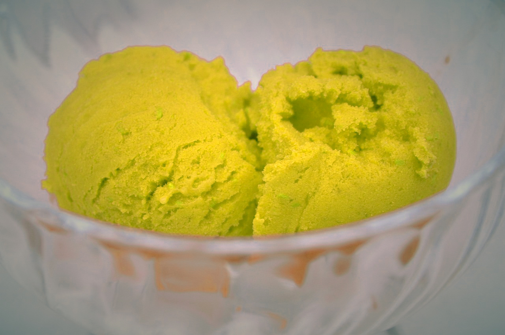

about
ジェラートについて
ジェラートの美味しさは、一度食べたらきっとわかっていただけるでしょう。一番の特徴は、その“食感”。イタリアの伝統と革新が融合した独自の製法で仕上げる「極上のなめらかさ」への追求を日々続けてきました。
口に入れれば、舌の上でしっとりととろけて優しく香りが広がり、気づいた時にはほのかに余韻を残しつつフワッと消えていく…。食べた瞬間は濃厚なのに、サラッと喉を通り過ぎていくサッパリとした食感は、他では決して味わえません。
ジェラートの本領
ジェラート・アイスクリームとはもともと、イタリアの家庭で作られていました。イタリアでは、家庭農園などでとれた果物や野菜などをそのまま使ってジェラートを作ります。
Gelateria MAKOではそんな本場イタリアン・ジェラート・アイスクリームを日本人の繊細な味覚に合わせ、食べやすくアレンジしたジェラートがいっぱい。本場の食感をよりわかりやすく表現する、新しい美味しさにこだわったジェラート・アイスクリームたちがまるで宝石のようにショーケースに佇みます。
安らぎ感じる空間
Gelateria MAKOではお持ち帰りだけではなく、ジェラート・アイスクリームとともに皆さまが一息付けるイートインを設けています。
開放的で温かみのある空間は日常を忘れゆっくり過ごせる特別な場所。スタッフ一同、皆さまに安らぎの時間をお届けします。
店内では名物のジェラート・アイスクリームのみならず、すぐに食べていただけるからこそ提供できる特別なメニューもご用意しています。
代表メッセージ
イタリアの片田舎で偶然食べたジェラートの味が忘れられないー
あの味、旨味、食感、その時の全てを再現して見せたい。気がついたら修行に行く準備をしていました。ミラノ、ヴェネツィア、トリノ、ローマ、ナポリ..素材選びからこだわって各地の味を再現しています。
ショップの雰囲気と合わせて、旅行に出かけた気分を楽しんでいただけたらと思います。
menu
-

- 
-

access
Gelateria MAKO
〒160-0022
東京都新宿区新宿4丁目1−6
NEWoMan 1F
03-5315-4803
12:00 ～ 23:30
gelateriamako.com